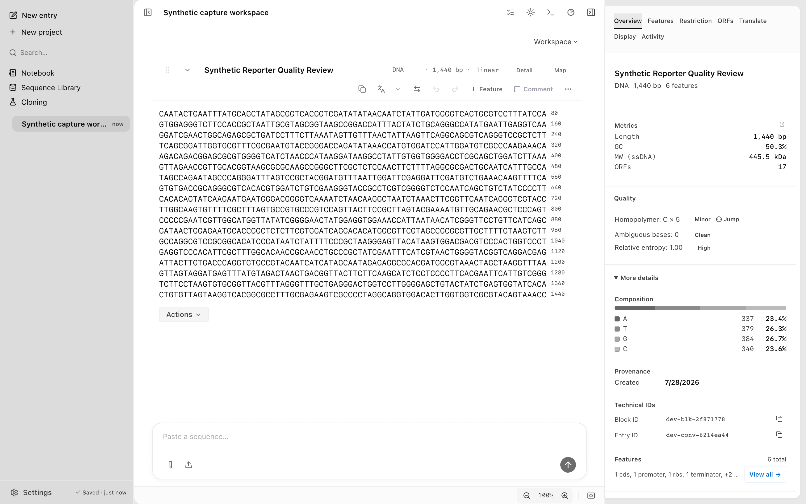

Quality checks
Screenshots and recordings show the direct edition. Compare editions.
Flag homopolymers, ambiguous bases, low-complexity regions, and internal stops. Compute base metrics with the CLI, and review flagged regions in the desktop app.
Run quality checks
Run seal quality to compute quality metrics for a sequence: length, GC content, a complexity score, homopolymer runs, direct and inverted repeats, and windowed GC.
seal quality myseq.faThe sequence can be an inline string, a file path, or stdin. Add --json for structured output.
seal quality myseq.fa --jsonA low complexity score, a long homopolymer run, or a detected repeat points to a sequence worth a closer look before you order or assemble it.
What gets flagged
In the desktop app, the Quality section in the Inspector Overview flags regions that tend to cause trouble in synthesis, cloning, and expression. The rows depend on the block type.
For a DNA or RNA block it flags:
- Homopolymers: runs of a single base, which can be hard to synthesize and sequence accurately.
- Ambiguous bases: IUPAC degenerate codes and
Npositions that are not a single defined base. - Entropy: dinucleotide sequence complexity, flagged when low to mark repetitive or low-information regions.
For a protein block it flags:
- Internal stops: stop codons inside a region you expect to translate as a coding sequence.
When you analyze a translated protein, the Protein tab raises the same kind of internal-stop advisory on the protein side. See Protein analysis.

To back-translate a protein into a degenerate DNA sequence built from IUPAC ambiguity codes, use seal degenerate.
seal degenerate MAR --organism ecoliJump to a problem
The Quality section links each flagged region to the offending range. Select a homopolymer, an ambiguous-base, or an internal-stop entry, and the app jumps to that range in the sequence so you can read it in context and fix it.
To avoid homopolymers and other synthesis hazards while rewriting a coding sequence, use the synthesis_guarded optimizer profile, which scores host preference while avoiding rare codons, local GC extremes, homopolymers, common cloning sites, and simple internal motifs. See Codon optimizers.
Over the CLI
The CLI commands that report on sequence quality are stateless and accept a sequence argument, a file path, or stdin.
| Command | What it reports |
|---|---|
seal quality | Length, GC content, complexity score, homopolymer runs, direct and inverted repeats, windowed GC. |
seal degenerate | Back-translates a protein into a degenerate DNA sequence and reports total degeneracy. Add --organism for an organism-minimized sequence. |
seal frames | All six reading frames, which surface in-frame stop codons. |
Translate a candidate coding region to check for internal stops before you treat it as a CDS. See Translation and ORFs. For the exact field shapes, see the IO contract.